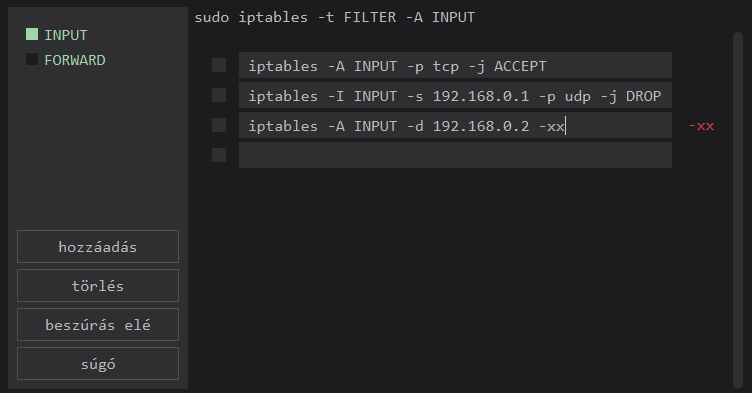
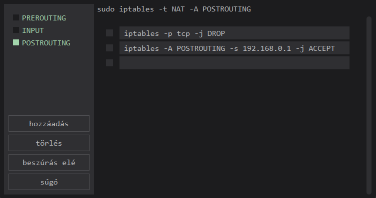
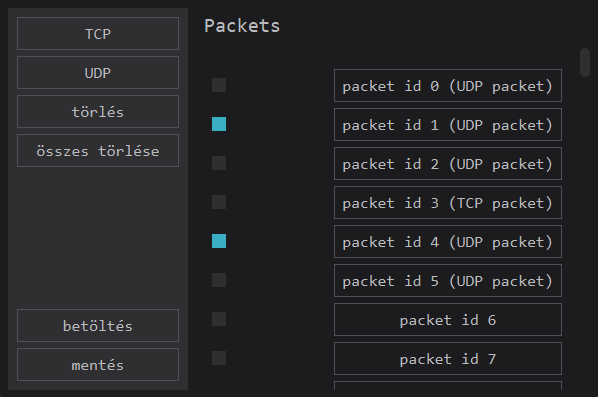

man iptables
Az iptbales IPv4 csomagszűrő szabályok tábláinak a beállítására, karbarntartására és ellenőrzésére szolgál a linux kernelben (Netfilter), ami magát a csomagtovábbítást végzi. A segítségével tűzfalat készíthetünk a rendszereinkhez. Ezekkel a szabályokkal adhatjuk meg, hogy a hálózati forgalom melyik részét engedhetjük át, és melyiket nem.
Több különböző tábla is definiálható. Minden tábla számos beépített láncot is tartalmaz, és tartalmazhat felhasználó által definiált láncokat is. Minden lánc olyan szabályok listája, amelyek adott csomagokhoz alkalmazhatók. Minden szabály megadja, hogy mit kell tenni az adott csomaggal. Ezt 'targetnek' nevezik, ami egy felhasználó által definiált láncra történő ugrást jelenthet.
Táblák
Öt független táblát különböztetünk meg jelenleg a funkcionailtásuk alapján, ezek mind más szabályokat tartalmazhatnak. A táblák láncokból épülnek fel, a láncok pedig szabályokból. A csomagtovábbítási szabályok funkció szerinti csoportosítása a táblákkal történik, a kézbesítés sorrendje szerinti csoportosítás pedig a láncokkal.
Az, hogy egy adott időpontban mely táblák vannak érvényben, a kernel konfigurációs beállításaitól és a jelen lévő moduloktól függ.
- alapértelmezett / fő tábla
- feladata: csomagszűrés
- eldönti, hogy egy csomag haladhat-e tovább, vagy megtagadhatja a továbbküldését
- ez a felhasználók által a legtöbbet használt tábla
- hálózati címfordítás
- ha egy belső hálózatnak egy kijárata van az internet felé, amit több gép is szeretne használni
- a router használja ezt a táblát
- belső hálózatról internet használata: a belső hálózat gépei belső IP-címeket kapnak, amiket a router külső IP-címre fordít át, amit az internetre továbbít (POSTROUTING lánc)
- internetről belső hálózat használata: küldő címek visszafordítása a belső címekre (PREROUTING lánc)
- tábla csomagok módosításához
- bejövő csomagok módosítása továbbirányítás előtt (PREROUTING lánc)
- lokálisan készített csomagok módosítása továbbirányítás előtt (POSTROUTING lánc)
- a kapcsolatfigyelés alóli mentességek konfigurálására használják
- a Netfilter hookokon magasabb prioritással regisztrálódik, így ez fut le leghamarabb
- bármely hálózati interfészen keresztül érkező csomaghoz - PREROUTING lánc
- helyi folyamatok által generált csomagokhoz - OUTPUT lánc
- MAC (Mandatory Access Control) hálózati szabályokhoz használják
- kötelező hozzáférés-szabályozást a Linux biztonsági moduljai valósítják meg
- a filter tábla után kerül meghívásra, hogy a filter tábla DAC (Discretionary Access Control) szabályai a MAC szabályok előtt lépjenek érvénybe
Mivel a két leggyakrabban használt tábla filter és a nat tábla, így a program ezek módosítására ad lehetőséget.
Targetek
Egy tűzfal szabály meghatározza a kritériumokat, amik egy csomagra és egy targetre vonatkoznak. Ha a csomag nem felel meg a szabálynak, akkor a lánc következő szabályának a vizsgálata következik. Ha megfelel a csomag, akkor a következő szabályt a szabályban megadott target határozza meg. Ez lehet egy felhasználó által definiált lánc neve, egy beépített lánc, vagy az ACCEPT, DROP vagy RETURN speciális értékek egyike.
- ACCEPT: átengedi a szabály a csomagot
- DROP: a csomagot eldobja a szabály, a csomag feldolgozása befejeződik
- RETURN: a lánc végigjárását megszakítjuk, és az előző (hívó) lánc következő szabályánál folytatódik
- REJECT: a szabály eldobja a csomagot, ICMP üzenetben értesíti a feladót, a csomag feldolgozása befejeződik
Ha egy beépített lánc végére érünk, vagy egy beépített láncban egy RETURN célú szabályt találunk, akkor a láncok default értékei által meghatározott cél adja meg, hogy mi a teendő a csomaggal.
Fontos, hogy nem minden target lehetőség érhető el minden lánc és tábla esetén, ezt a típusaik határozzák meg.
Láncok
A láncok a csomag útjának az állomásai, ahol szabályokat alkalmazhatunk. Nem minden chain érhető el minden tábla számára, ez táblánként specifikus.
A csomagtovábbítás szempontjából öt típusa van a csomagoknak:
- PREROUTING: beérkező csomagokra, amint bekerülnek a network stack-be; feldolgozásra kerül mielőtt bármilyen útválasztási döntést meghoznánk arról, hogy merre küldjük tovább a csomagot
- INPUT lánc: a beérkező csomagokra (hálózatról érkező, az adott gépnek szánt csomag)
- FORWARD lánc: a továbbítandó csomagokra (hálózatról érkező, de nem az adott gépnek szánt csomag)
- OUTPUT lánc: a kimenő csomagokra (az adott gépről indított csomag)
- PREROUTING: kimenő vagy továbbított csomagokra, miután az útválasztási döntéseket meghoztuk, közvetlenül mielőtt a csomag a hálózatra kerülne (a PREROUTING ellentéte)
A felhasználó emellett saját láncokat is létrehozhat. Az öt beépített láncnak minden táblában van default értéke (policy). Ezek akkor érvényesülnek, amikor a láncban egy szabályt sem lehetett végrehajtani, vagyis egyik végrehajtási feltétel sem teljesült vagy a lánc nem tartalmaz szabályt. Ez az alapértelmezett érték ACCEPT vagy DROP lehet.
- beérkező csomagokhoz a helyi hálózatra: PREROUTING → INPUT
- beérkező csomagokhoz, amik egy másik hostra tartanak: PREROUTING → FORWARD → POSTROUTING
- lokálisan létrehozott csomagokra: OUTPUT → POSTROUTING
Szabályok
A szabályok parancsok, amelyek segítségével a hálózati forgalmat manipulálhatjuk. Ha egy lánc meghívásra kerül, a csomagot a lánc minden szabályára ellenőrizni kell a szabályok sorrendjét követve. Ha a csomag nem felel meg egy vizsgált szabálynak, akkor a láncban a következő szabályra ellenőrizzük, ha a csomag megfelel egy adott szabálynak, akkor a következő vizsgált szabály a targetben megadott lesz. Minden szabály három részből áll, ezek közül az első kötelező, a másik két rész opcionális.
A szabályok alakja:
- parancs (command): a szabály helyének megadása (tábla, lánc) és a végrehajtandó művelet
- feltétel (match): protokoll típus, cél vagy forrás IP-cím, cél vagy forrás port, input vagy output interface, header
- célok (target/jump): ha egy csomag megfelel egy szabálynak, akkor ez mondja meg, mi lesz a következő lépés
A program ismertetése
A program iptables szabályok összeállítását teszi lehetővé a felhasználó számára grafikus felületen. A szabályok összeállításában magyarázó szövegek és példa szabályok segítenek.
A felhasználónak lehetősége van teszt forgalom futtatására a megalkotott szabályrendszeren, ezzel szemléltetve a szabályok alkalmazhatóságát.
Szabályok készítése
A program a két leggyakrabban használt táblához (filter és nat) ad lehetőséget szabályok felvételére és szerkesztésére. A táblák láncaihoz adhatunk hozzá szabályokat a következő parancsok, feltételek és targetek felhasználásával.
A szabályokat mindig az iptables kulcsszóval kell kezdeni.
Parancsok
- A szabályt beszúrja a megadott lánc végére.
- FONTOS: Mindig az éppen kiválasztott lánc nevét kell megadni.
- A szabályt beszúrja a megadott lánc elejére.
- FONTOS: Mindig az éppen kiválasztott lánc nevét kell megadni.
Feltételek
- A küldő ip-címe.
- Helyes alak: xxx.x.x.x
- A címzett ip-címe (/maszk).
- Helyes alak: xxx.x.x.x
- A küldő port.
- Helyes alak: egy szám
- A címzett port.
- Helyes alak: egy szám
- A szabály vagy az ellenőrizendő csomag protokollja.
- Megadható értékek: tcp vagy udp
Targetek
- A csomag céljának megadására szolgál.
- Megadható értékek:
- ACCEPT
- DROP
Rendszerkövetelmények
A program platformfüggetlen, bármilyen operációs rendszeren futtatható.
Kezdőoldal
A kezdőoldalon navigálhatunk a program ablakai között. Megnyithatjuk a Filter table és a Nat table szabály szerkesztő ablakait, a Csomagküldés és Csomagkészítés ablakokat, ahol csomagokal dolgozhatunk, emellett lehetőség van mentésre, korábbi munkák betöltésére, és a felhasználói súgó elérésére.
Szabályok oldala
A táblákhoz tartozó szabályok szerkesztőablakán kiválaszthatjuk a táblában szereplő chainek közül azt, amihez szeretnénk szabályokat felvenni és szerkeszteni. A hozzáadás gombra kattintás után új szabály szerkesztője jelenik meg a jobb oldali részben.
Begépelve tudjuk megadni a szabályokat. A helytelenül megadott rész piros színnel fog megjelenni a beviteli mező mellett. A helytelen részeket minden esetben javítai kell! A helyesen megadott szabályrészek csak a beviteli mezőben láthatók.
Egy szabályra crtl + jobb egérgomb kattintással megnyithatjuk a súgót, ahonnan segítséget kaphatunk a szabályok megírásában.

Egy vagy több szabály kijelölése után törölhetjük őket, pontosan egy kijelölt szabály elé pedig új szabályt szúrhatunk be.

Csomagkészítés
Az oldalon lehetőség van pcap-ből betölteni és pcap-be menteni csomagokat. UDP és TCP csomagokat lehet készíteni és szerkeszteni. A csomagok kijelölésével lehetőség van a törlésükre.
A TCP és UDP gombokra kattintva új csomagokat tudunk létrehozni az erre szolgáló szerkesztőablak segítségével. A csomagokra kattintva megnyílik a csomagok fejlécérenek szerkesztésére szolgáló külön szerkesztőablak. Ha a kulcs felé visszük a kurzort, az adott elemre vonatkozó információk jelennek meg.
Csomagküldés
A bemeneti fájlban adhatjuk meg a csomagokat, amikre szeretnénk futtatni a létrehozott szabályainkat. A kimeneti fájlban a szabályokra futtatás után megmaradt csomagok jelennek meg. Megadhatjuk a tábla és a lánc nevét is, amire szeretnénk a futtatást elvégezni.
Egyéb információk
A létrehozott szabályok mentéséhez adjuk meg a fájl nevét a Mentés/Betöltés oldalon. Betöltéshez keressük meg és válasszuk ki a betölteni kívánt fájlt.